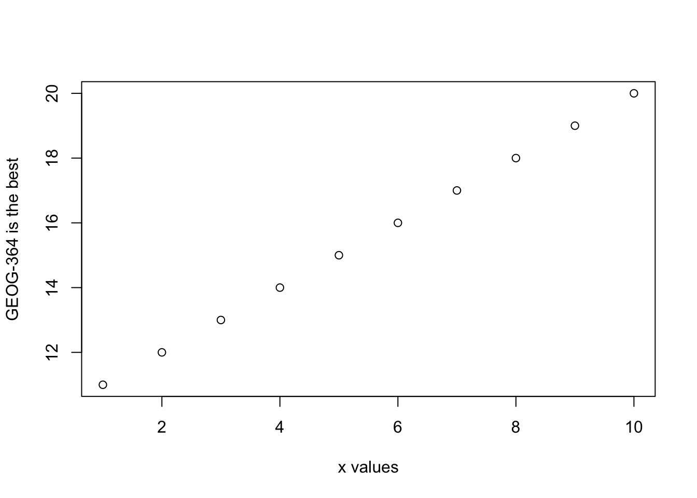

Chapter 3 R basics
3.1 Getting started
Open R-studio You will be greeted by three panels:
- The interactive R console (entire left)
- Environment/History (tabbed in upper right)
- Files/Plots/Packages/Help/Viewer (tabbed in lower right)
If you click on the View/Panes/Pane Layout menu item, you can move these around. I tend to like the console to be top left and scripts to be top right, with the plots and environment on the bottom - but this is totally personal choice.

Figure 3.1: The basic R-studio screen when you log on
If you have used R before, you might see that there are variables and plots etc already loaded. It is always good to clear these before you start a new analysis. To do this, type the following command in the console section
3.2 Basic arithmatic
The console is a space where you can type commands and it will directly print out the answer.
The simplest thing you could do with R is do arithmetic. Try typing the following into the console and R will calculate the answer.
## [1] 101If you type in an incomplete command, R will wait for you to complete it. For example, if you type
1 +
and press enter, the > will have changed into a +, which means its waiting for you to complete the command.
If you want to cancel a command you can simply hit “Esc” and R studio will reset.
Pressing escape isn’t only useful for killing incomplete commands: you can also use it to tell R to stop running code (for example if it’s taking much longer than you expect), or to get rid of the code you’re currently writing.
When using R as a calculator, the order of operations is the same as you would have learned back in school, so use brackets to force a differnet order. For example, try typing in each of the the commands below (in grey)
## [1] 13will give a different result to
## [1] 16Really small or large numbers get a scientific notation:
## [1] 2e-04Which is shorthand for “multiplied by 10^XX”. So 2e-4 is shorthand for 210^{-4} 2 * 10^(-4).
3.4 Comparing things
We can also do comparisons in R:
## [1] TRUE## [1] TRUE## [1] FALSE## [1] TRUE## [1] TRUE## [1] TRUE3.5 Variables and assignment
It’s great to be able to do maths easily on the screen, but really we want to be able to save our results, or load in data tables etc, so we can do more complex commands.
In R, we can give things a name. This is called a variable. So then, instead of typing the whole command, we can simply type its name and it will remember the final answer.
The way we store data into a variables is using the assignment arrow <-, which is made up of the left arrow and a dash. You can also use the equals sign, but it can cause complications later on. Try typing this command into the console.
Notice that pressing enter did not print a value onto your screen as it did earlier. Instead, we stored it for later in something called a variable, with the name ‘x’.
So our variable x is now associated with the value 0.025, or 1/40. You can print a variable on screen by typing its name, no quotes, or by using the print command. Try printing out your variable.
## [1] 0.025## [1] 0.025Look for the Environment tab in one of the panes of RStudio, and you will see that ‘x’ and its value have appeared. This ‘x’ variable can be used in place of a number in any calculation that expects a number:
## [1] -3.688879Notice also that variables can be reassigned:
## [1] 100x used to contain the value 0.025 and and now it has the value 100.
Note, the letter x isn’t special in any way, it’s just a variable name. You can replace it with any word you like as long as it contains no spaces and does not begin with a number. Different people use different conventions for long variable names, these include
- periods.between.words.1
- underscores_between_words
- camelCaseToSeparateWords
What you use is up to you, but be consistent.
You can now use mulitple variables together. For example, try these commands:
y <- x + 1 #Take the variable x, add 1 then save it to a new variable called y
y # print the contents of "y" onto the screen## [1] 101Now see that there are two variables in your environment tab, x and y. Where y is the sum of the contents of x plus 1. The right hand side of the assignment (right of the <-) can be any valid R command. The right hand side is fully evaluated before any assignment occurs.The variable only saves the result, not the command itself.
You can even use this to change your original variable . Try typing the code below in a few times into the console and see what happens.
x <- x + 1 #notice how RStudio updates its description of x on the top right tab
x # print the contents of "x" onto the screen## [1] 101Variables such as x or y don’t have to be individual numbers. They could refer to tables of data, or a spatial map, or any other complex things. We will cover this more in future labs.
3.6 Functions
The power of R lies in its many thousands of built in commands. To call a function, we simply type its name, followed by open and closing parentheses. Here are some examples:
plot(x=1:10,y=1:10)- will plot the numbers 1 to 10 against 1 to 10
file.copy(file1="~/Desktop/originalfile.txt",file2="~/Documents/newfile.txt")- will copy a file from your desktop to your documents folder
The round brackets/parentheses, ( ), mean that it is a command. They are essential for the computer to understand that you are looking for a command, not a variable called that name
As another example, the file.choose command lets you select a file on your computer and it will print out the location of the file into the console.
Try typing file.choose( ) into your console, select a file and see what is printed on the console screen.
Sometimes we need to give the command some additional information. Anything we wish to tell the command should be included inside the inside the parentheses (separated by commas). The command will literally only know about the stuff inside the parentheses.
## [1] 0.841471## [1] 2.302585This following command will plot the number 1 to 10 against the numbers 12 to 20, along with some axis labels. When you run this, the plot will show up in the plots tab.
plot(1:10,11:20, xlab="x values",ylab="GEOG-364 is the best") # plot the numbers 1 to 10 against the numbers 11 to 20
3.6.1 Command help
Typing a ? before the name of a command or function will open the help page for that command in the “environment” box on your screen. For example, try typing ?file.choose into your console and pressing Enter. Because you’re looking at the help file, not actually running the command, you don’t need the parentheses here.
As well as providing a detailed description of the command and how it works, scrolling to the bottom of the help page will usually show worked example of the code. You can then copy these line by line into the console to understand what is happening.

Figure 3.2: What you should see after typing ?file.choose
One hint:
Don’t worry about trying to remember every function in R. You can simply look them up on Google, or if you can remember the start of the function’s name, use the tab completion in RStudio. In this course, you will be provided with most of the functions you need. This cartoon from XKCD is a pretty normal way to think about programming! One of the most important skills you can learn as a programmer is how to effectively google the information you need…

Figure 3.3: https://xkcd.com/627/
3.7 Creating an Rmd-script
So far, we have been typing commands into the console, but once you close R, these will all be lost. So we will now move onto writing code commands that you can save and submit.
There are several types of document that you can create and save in R-Studio.
A basic script (the filetype is .r). This is simply just a a notepad where you can write code commands (a script is show in (1.1))
An .Rmd file (an R-Markdown document) - (3.4). This is a document you can use to write a report with normal text/pictures, but ALSO include R output. So essentially it will let you make interactive documents which include text, code, plots and other output. These instructions themselves are the output of a markdown document. This is covered in Lab 1, but there is a video that describes more here: http://rmarkdown.rstudio.com

Figure 3.4: On the left shows the .Rmd code, on the right is the output
3.3 Comments
If you type a # symbol into the console, R will ignore anything you write afterwards. This is great for adding notes and comments. For example